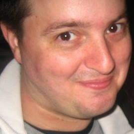
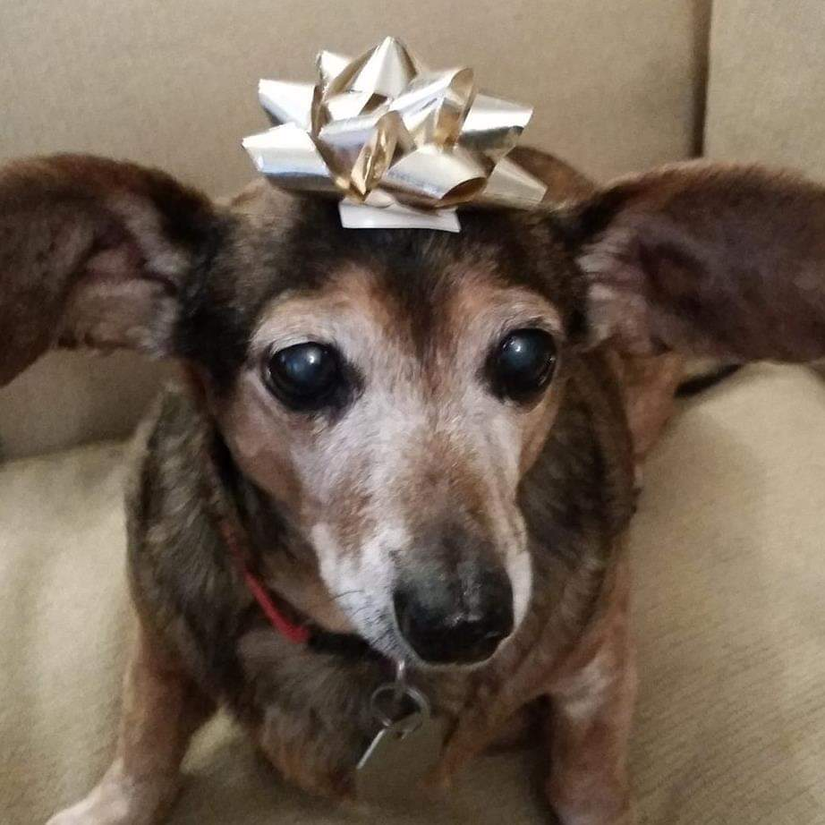
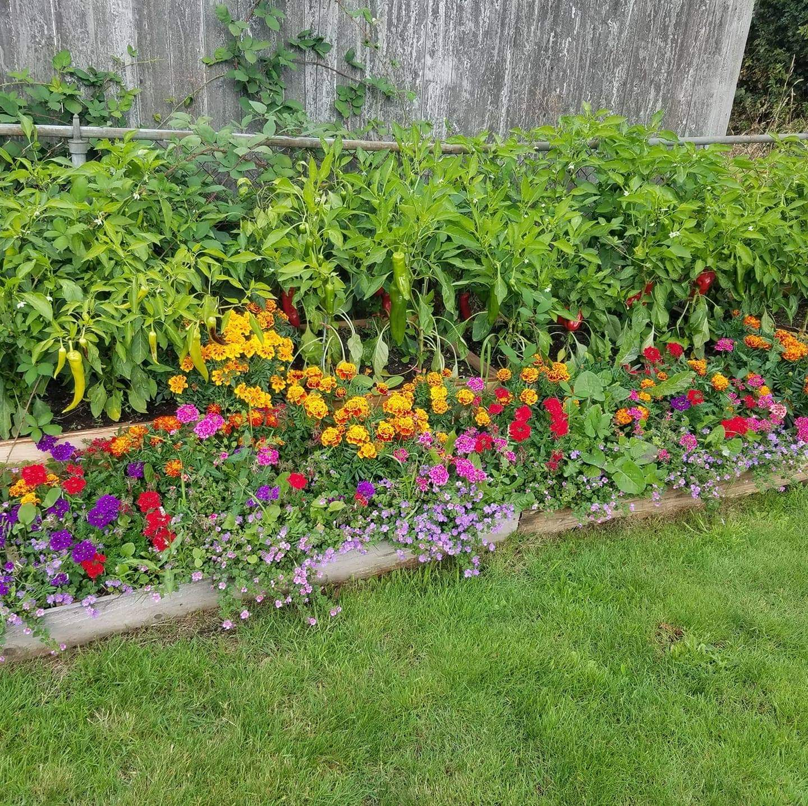

I was born in Wenatchee, Washington; grew up in Eastern Washington; and moved to Seattle in April of 1999. I currently live in the central Beacon Hill neighborhood. I have been adopted by a 19 year old dachsund-chihuahua mix; her name is Wiener. Wiener The Dog. Mt garden is my happy place. I grow plants handed down as starts or seeds from my great grandmother to my grandmother to my mother to me. I enjoy canning my produce and am especially proud of my pickles, applesauce, and apple butter -like my great grandmother used to make!



I have worked in the food and beverage industry for over 30 years. Starting as a freshman in high school, I contiued in fast food for a couple of years after, then moved to full service dining. My most recent employer was The Crab Pot Restatant and Bar; I worked there for 19.5 years. I took a leave of absence to attend Code Fellows and look forward to finding a job in tech.
I've visited multiple cities over the last few years. Although I've had fun in 15 plus cities, I've only listed my top 10 favorites below